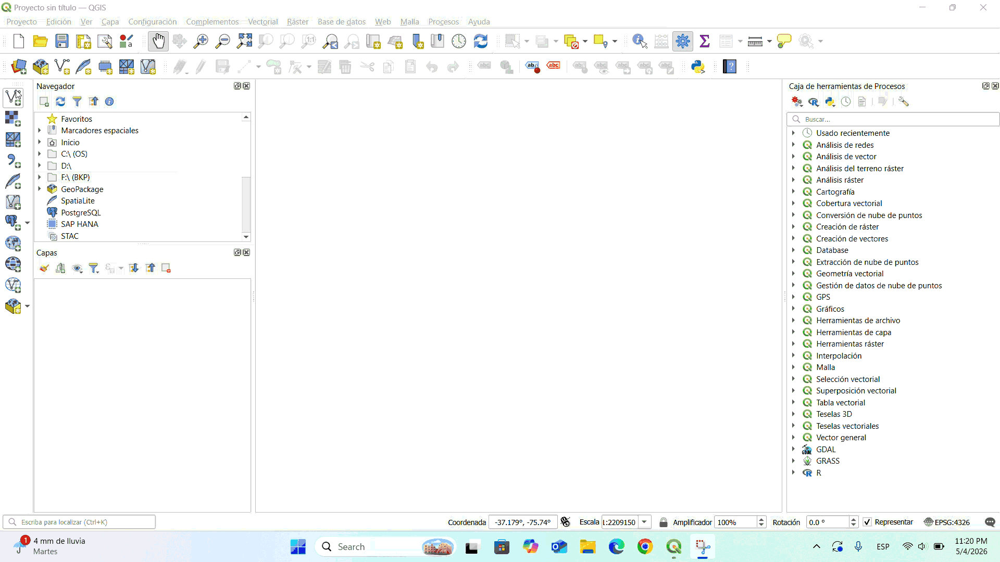
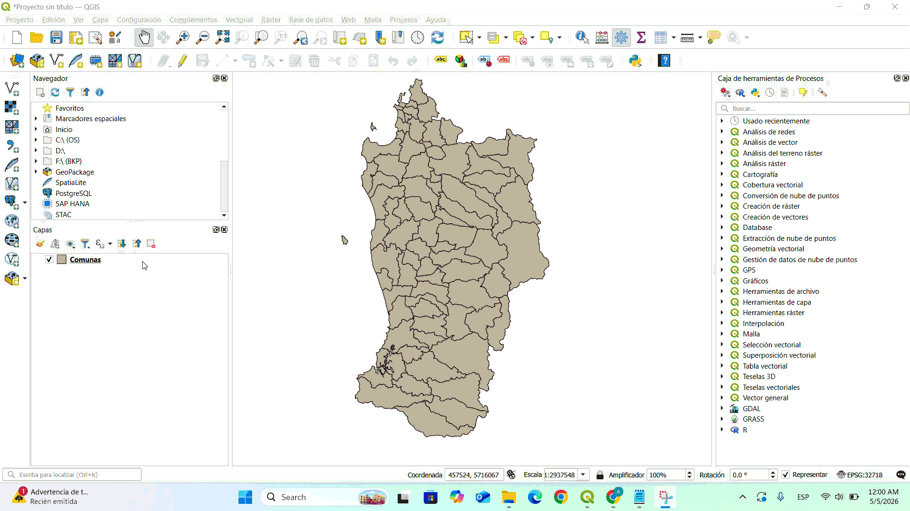
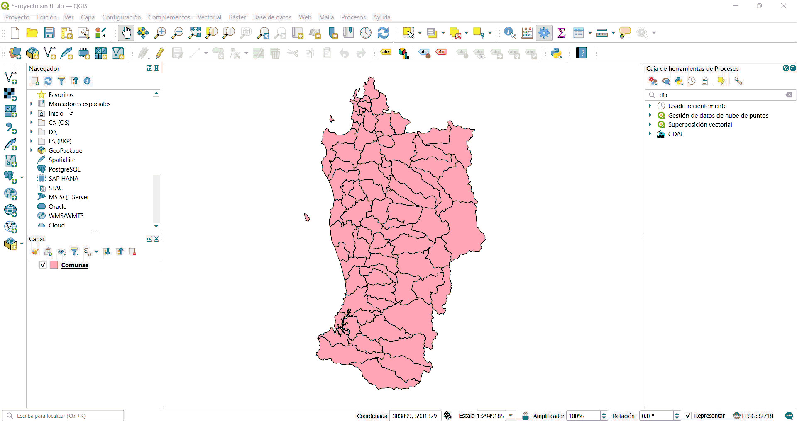

Introducción a QGIS y Análisis Vectorial para la Gestión Hídrica
1.1 Introducción
Si nunca ha utilizado QGIS antes, ¡bienvenido/a! Esta guía le acompañará paso a paso en su primera tarea fundamental: abrir un archivo de datos geográficos y visualizarlo en el mapa. No se requiere ningún conocimiento previo de SIG (Sistemas de Información Geográfica).
Utilizaremos el Administrador de Fuentes de Datos, que es la "ventanilla" de QGIS para incorporar datos al proyecto. Piénselo como el cuadro de diálogo "Abrir archivo" de cualquier programa, pero especializado en datos geográficos.
Al finalizar esta sección, usted será capaz de:
- Reconocer la interfaz básica de QGIS y sus paneles principales.
- Identificar qué es un archivo vectorial y por qué se compone de varios archivos.
- Abrir el Administrador de Fuentes de Datos desde la barra de herramientas.
- Navegar por su computador para encontrar un archivo
.shp. - Añadir la capa al proyecto y verificar que se despliega correctamente.
1.2 ¿Qué es QGIS?
QGIS es un programa gratuito y de código abierto que permite visualizar, editar y analizar información geográfica. Funciona de manera similar a Google Maps o Google Earth, pero con muchas más herramientas de análisis y sin necesidad de conexión a internet.
Con QGIS usted puede, por ejemplo, ver los límites de comunas de Chile, analizar cuencas hidrográficas, calcular áreas de bosque, o identificar zonas de riesgo. Es una herramienta fundamental en ciencias ambientales, geografía, planificación territorial y muchas otras disciplinas.
1.3 Datos vectoriales y el formato Shapefile
En QGIS, la información geográfica se organiza en capas, igual que transparencias apiladas en un mapa físico. Cada capa puede contener un tipo de información: comunas, ríos, caminos, puntos de monitoreo, etc.
Los datos vectoriales son uno de los dos grandes tipos de datos en SIG (el otro son los rásteres). Representan objetos del mundo real mediante tres tipos de geometría:
Línea: ríos, caminos, tendidos eléctricos.
Polígono: comunas, predios, áreas protegidas, cuencas.
El formato más común para intercambiar datos vectoriales es el Shapefile (.shp), creado por la empresa ESRI. Su particularidad es que no es un único archivo, sino un conjunto de archivos que deben estar siempre juntos en la misma carpeta:
| Archivo | Extensión | Contenido | ¿Obligatorio? |
|---|---|---|---|
| Geometría | .shp | Coordenadas y forma de cada entidad | ✓ Sí |
| Índice | .shx | Índice de posición de las geometrías | ✓ Sí |
| Atributos | .dbf | Tabla de atributos (base de datos dBASE) | ✓ Sí |
| Proyección | .prj | Sistema de coordenadas en formato WKT | Recomendado |
| Metadatos XML | .xml | Metadatos geoespaciales (ISO 19139) | Opcional |
.shp, .shx y .dbf). Si falta alguno, QGIS no podrá leer la capa correctamente.
1.4 Interfaz de QGIS: elementos clave
Al abrir QGIS por primera vez puede resultar intimidante. La pantalla tiene muchos botones y paneles. Para esta guía, solo necesita conocer tres zonas:
2. Panel de Capas (izquierda): lista todas las capas cargadas en el proyecto, como una tabla de contenidos. Puede activar/desactivar su visibilidad con la casilla de verificación.
3. Barras de herramientas (arriba): filas de botones para las acciones más frecuentes. La que usaremos se llama Administrar capas.
Barra de herramientas — Administrar capas
La barra Administrar capas se encuentra, por defecto, en el sector izquierdo de la barra de herramientas superior. Contiene botones de acceso rápido para añadir distintos tipos de capas al proyecto.
Ver → Barras de herramientas → Administrar capas.
También puede utilizar el atajo de teclado Ctrl + L para abrir el Administrador de Fuentes de Datos directamente.
1.5 Procedimiento: abrir un archivo shapefile
A continuación encontrará el procedimiento completo, explicado con el mayor nivel de detalle posible. Siga cada paso en orden y no avance hasta haber completado el anterior.
Busque el icono de QGIS en su escritorio o menú de aplicaciones y ábralo con doble clic. La primera vez que se abre puede tardar algunos segundos. Cuando la pantalla principal esté cargada, verá el lienzo vacío (área gris o blanca central): ese es su "tablero de trabajo".
Mire la zona de barras de herramientas en la parte superior de la ventana. Busque un grupo de botones pequeños con íconos de puntos, líneas y polígonos, generalmente ubicados en el lado izquierdo o debajo del menú principal. Esa es la barra Administrar capas.
Si no la ve, actívela desde el menú: Ver → Barras de herramientas → Administrar capas.
En la barra Administrar capas, haga clic en el botón que tiene el ícono de varias figuras geométricas con un signo + (generalmente un punto, una línea y un polígono juntos). Al pasar el mouse sobre él, debería aparecer el texto "Añadir capa vectorial".
Alternativa: vaya al menú superior Capa → Añadir capa → Añadir capa vectorial… o use el atajo Ctrl + Shift + V.
Aparecerá una ventana nueva llamada Administrador de Fuentes de DatosEn su panel izquierdo verá varios íconos: cada uno representa un tipo diferente de fuente de datos (vectorial, raster, base de datos, etc.). Confirme que esté seleccionada la sección Vectorial (ícono de polígono con lápiz).
Dentro de la sección Vectorial, verá un menú desplegable llamado Tipo de fuente. Asegúrese de que diga ArchivoEsta opción le indica a QGIS que va a cargar datos desde un archivo guardado en su computador (no desde internet ni desde una base de datos).
Haga clic en el botón con tres puntos (…) que aparece junto al campo Nombre del conjunto de datos. Se abrirá el explorador de archivos de su sistema operativo (igual que cuando abre un documento en Word o Excel). Navegue hasta la carpeta donde guardó su shapefile y seleccione el archivo con extensión .shp. Luego haga clic en Abrir
💡 Si tiene varios archivos con el mismo nombre pero distintas extensiones (.shp, .dbf, .shx…), seleccione siempre el que termina en .shp.
Una vez que el nombre del archivo aparezca en el campo de texto, haga clic en el botón azul Añadir que se encuentra en la parte inferior del cuadro de diálogo. Verá cómo la capa aparece listada en el Panel de Capas (izquierda de la pantalla principal) y sus geometrías se dibujan en el lienzo del mapa.
Haga clic en Cerrar para salir del Administrador de Fuentes de Datos. Ahora puede interactuar con la capa: haga clic derecho sobre su nombre en el panel izquierdo y seleccione Zoom a la capa para que QGIS centre automáticamente el mapa sobre sus datos.
1.6 Demostración
La siguiente animación ilustra el procedimiento completo descrito en los pasos anteriores.

1.7 Resultado esperado
Al completar exitosamente el procedimiento, debería observar:
El nombre del archivo aparece en el panel izquierdo Capas, con el ícono correspondiente al tipo de geometría (punto, línea o polígono).
Las geometrías de la capa se despliegan en el lienzo del mapa con una simbología predeterminada aleatoria asignada por QGIS.
La esquina inferior derecha de QGIS muestra el sistema de referencia de coordenadas (SRC) de la capa cargada.
2.1 La tabla de atributos
Hasta ahora hemos aprendido a ver los datos geográficos en el mapa. Pero cada entidad del mapa (cada polígono, punto o línea) tiene también información asociada en forma de tabla: nombre, código, área, población, etc. Esa información se almacena en la tabla de atributos.
Piénsela como la hoja de cálculo que está "detrás" del mapa. Cada fila corresponde a una entidad geográfica y cada columna a un campo de información. Lo que hace a QGIS especialmente potente es que la tabla y el mapa están sincronizados: si selecciona filas en la tabla, las entidades correspondientes se resaltan automáticamente en el lienzo, y viceversa.
En esta sección aprenderá a:
- Abrir la tabla de atributos desde el menú contextual de la capa.
- Acoplar la ventana de atributos al panel inferior de QGIS para trabajar cómodamente.
- Seleccionar registros en la tabla y verificar que se resaltan en el mapa.
- Deseleccionar registros una vez terminada la exploración.
2.2 Abrir la tabla de atributos
La forma más directa de acceder a la tabla de atributos es a través del menú contextual de la capa, es decir, el menú que aparece al hacer clic derecho sobre el nombre de la capa en el Panel de Capas.
Asegúrese de que la capa vectorial que cargó en la Sección 1 aparezca listada en el panel izquierdo de QGIS (Panel de Capas). Debe ver su nombre con el ícono de geometría correspondiente a la izquierda.
Ubique el nombre de su capa en el Panel de Capas y haga clic derecho sobre él. Se desplegará un menú contextual con varias opciones. No haga clic izquierdo: ese solo selecciona la capa sin abrir el menú.
En el menú contextual, busque y haga clic en la opción Abrir tabla de atributosTambién puede usar el atajo de teclado F6 cuando la capa esté seleccionada (resaltada en azul) en el Panel de Capas.
Se abrirá una nueva ventana con la tabla de datos asociada a la capa.
Observe que la tabla tiene filas (una por cada entidad del mapa) y columnas (una por cada atributo o campo). En la barra inferior de la ventana verá el total de entidades y cuántas están seleccionadas en ese momento.
2.3 Acoplar la ventana de atributos
Por defecto, la tabla de atributos se abre como una ventana flotante independiente. Esto puede ser incómodo cuando se quiere ver simultáneamente el mapa y la tabla. QGIS permite acoplar (o "anclar") esta ventana al panel inferior de la interfaz principal, de modo que ambos elementos queden visibles al mismo tiempo.
En la barra de título de la ventana de tabla de atributos, busque el ícono pequeño que parece una flecha o un pin apuntando hacia abajo (en algunos temas de QGIS aparece como un ícono de "anclar" o "dock"). Su posición exacta puede variar según el sistema operativo.
Si no encuentra el ícono, vaya a Configuración → Opciones → Fuentes de datos y active la opción "Abrir tabla de atributos en una ventana acoplada". Luego cierre y vuelva a abrir la tabla: aparecerá acoplada al panel inferior.
Una vez acoplada, la tabla de atributos ocupará la parte inferior de la ventana de QGIS y el lienzo del mapa quedará en la parte superior. Podrá ajustar el tamaño de cada sección arrastrando el divisor horizontal entre ambas áreas.
2.4 Seleccionar registros y visualizarlos en el mapa
Una de las funciones más útiles de la tabla de atributos es poder seleccionar registros directamente desde ella. Cada registro seleccionado en la tabla se resaltará automáticamente en el mapa con un color amarillo brillante (color de selección predeterminado de QGIS), lo que permite identificar espacialmente las entidades de interés.
En la tabla de atributos, cada fila tiene un número a la izquierda (encabezado de fila). Haga clic en ese número para seleccionar la fila completa. La fila se resaltará en azul dentro de la tabla y la entidad correspondiente aparecerá en amarillo en el lienzo del mapa.
Para seleccionar más de un registro a la vez, mantenga presionada la tecla Ctrl y haga clic en los números de fila que desee agregar a la selección. Cada entidad seleccionada se marcará en amarillo en el mapa de forma simultánea.
Para seleccionar un rango continuo de filas, haga clic en la primera, mantenga Shift y haga clic en la última.
Si las entidades seleccionadas no son visibles en el lienzo actual, puede ir a Ver → Zoom a la selección o usar el atajo Ctrl + J. QGIS centrará el mapa automáticamente sobre las entidades seleccionadas.
En la barra inferior de la tabla de atributos hay un menú desplegable que por defecto dice "Mostrar todas las entidades". Cámbielo a "Mostrar entidades seleccionadas" para filtrar la tabla y ver solo las filas que corresponden a sus entidades seleccionadas.
Para eliminar la selección, puede hacer clic en el botón Deseleccionar todo (ícono de entidades con una X) en la barra de herramientas de la tabla de atributos, o bien ir al menú Edición → Deseleccionar entidades en todas las capas, o usar el atajo Alt + Shift + A.
2.5 Resultado esperado
Al completar los tres procedimientos de esta sección, debería observar:
La ventana de tabla de atributos se muestra en la parte inferior de QGIS, con el mapa visible en la zona superior. Ambos elementos son visibles simultáneamente.
Las filas seleccionadas en la tabla aparecen en azul y las entidades geográficas correspondientes se muestran en amarillo sobre el lienzo del mapa.
La barra inferior de la tabla de atributos indica cuántas entidades están seleccionadas del total, por ejemplo: 3 de 152 entidades seleccionadas.
2.6 Demostración
La siguiente animación muestra el procedimiento completo de esta sección: apertura de la tabla de atributos, acoplamiento al panel inferior y selección de registros con visualización sincronizada en el mapa.

3.1 Mapas base con teselas XYZ
Hasta ahora hemos trabajado con capas propias cargadas desde archivos. Sin embargo, es muy útil disponer de un mapa base de referencia visual: imágenes satelitales, cartografía de calles, relieve sombreado, etc. QGIS permite conectarse a servicios de teselas XYZ que proveen este tipo de fondos cartográficos de forma gratuita.
Las teselas XYZ (también llamadas tile maps) son imágenes rasterizadas pre-generadas que cubren el mundo entero a diferentes niveles de zoom. Servicios como OpenStreetMap, Google Maps, Esri World Imagery o Stamen Terrain se distribuyen en este formato.
En esta sección aprenderá a:
- Conectar un servicio de teselas XYZ desde el Explorador de QGIS.
- Cargar un mapa base al lienzo del proyecto.
- Reordenar las capas en el Panel de Capas para que el mapa base quede al fondo.
- Comprender la lógica de apilamiento de capas en QGIS.
3.2 Cargar un mapa base desde teselas XYZ
QGIS incluye por defecto algunas conexiones XYZ preconfiguradas (como OpenStreetMap). También es posible agregar manualmente la URL de cualquier servicio compatible.
Si el panel Explorador no está visible, actívelo desde Ver → Paneles → Explorador. Este panel funciona como un navegador de archivos, pero también muestra conexiones a servicios de datos geoespaciales.
En el panel Explorador, desplácese hacia abajo hasta encontrar la entrada Teselas XYZ (o XYZ Tiles). Haga clic en la flecha para expandirla. Verá al menos una entrada: OpenStreetMap.
Si desea usar un servicio distinto a OpenStreetMap, haga clic derecho sobre Teselas XYZ y seleccione Nueva conexión…. Ingrese un nombre y la URL del servicio. Algunos ejemplos útiles:
Google Satellite:
https://mt1.google.com/vt/lyrs=s&x={x}&y={y}&z={z}
Esri World Imagery:
https://server.arcgisonline.com/ArcGIS/rest/services/World_Imagery/MapServer/tile/{z}/{y}/{x}
Haga doble clic sobre el nombre del servicio (por ejemplo, OpenStreetMap) en el Explorador, o arrástrelo directamente al lienzo del mapa. La capa de teselas se agregará al Panel de Capas y el mapa base aparecerá en el lienzo.
Si el mapa base no aparece de inmediato, use Ver → Zoom a la capa sobre la capa de teselas, o haga zoom con la rueda del mouse hasta un nivel donde las teselas sean visibles. Las teselas requieren conexión a internet activa.
3.3 Ordenar capas en el Panel de Capas
El Panel de Capas de QGIS funciona con una lógica de apilamiento: las capas que aparecen más arriba en la lista se dibujan encima de las que están más abajo. Si el mapa base queda sobre sus capas vectoriales, estas quedarán tapadas y no serán visibles.
La regla general es simple: el mapa base siempre debe estar en la posición más baja del Panel de Capas.
Observe el Panel de Capas. Si la capa de teselas XYZ aparece sobre su capa vectorial, deberá moverla hacia abajo. El orden correcto es: capa vectorial arriba → mapa base abajo
Haga clic sostenido sobre el nombre de la capa de teselas en el Panel de Capas y arrástrela hacia abajo, soltándola en la posición más baja de la lista. Verá cómo el orden del mapa cambia en tiempo real mientras arrastra.
Con el mapa base al fondo, sus capas vectoriales deberían ser visibles sobre él. Si alguna capa no aparece, verifique que su casilla de visibilidad (checkbox a la izquierda del nombre) esté activada.
Puede hacer clic en la casilla de verificación a la izquierda del nombre de cualquier capa para mostrarla u ocultarla temporalmente sin eliminarla del proyecto. Esto es útil para comparar diferentes capas o simplificar la vista durante el trabajo.
3.4 Resultado esperado
Al completar esta sección, debería observar:
El fondo del lienzo muestra cartografía de referencia (calles, imágenes satelitales o relieve) proveniente del servicio XYZ conectado.
Las geometrías de su shapefile se despliegan sobre el mapa base, con la capa de teselas en la posición inferior del Panel de Capas.
Al desactivar la casilla de la capa vectorial, el mapa base queda solo. Al reactivarla, la capa vuelve a aparecer sobre el fondo.
3.5 Demostración
La siguiente animación muestra la carga de un mapa base desde teselas XYZ y el reordenamiento de capas en el Panel de Capas.

4.1 Filtrar entidades de una capa
En la sección anterior cargamos una capa llamada comunas que contiene registros de tres regiones distintas: La Araucanía, El Biobío y Los Ríos. Muchas veces, sin embargo, necesitamos trabajar únicamente con un subconjunto de esos datos — por ejemplo, solo las comunas de una región específica — sin necesidad de crear un archivo nuevo.
QGIS permite aplicar un filtro directamente sobre la capa. Un filtro no elimina ni modifica los datos originales: simplemente le indica a QGIS que muestre solo las entidades que cumplen una condición determinada. El resto queda oculto temporalmente y puede recuperarse en cualquier momento desactivando el filtro.
Filtro: oculta las entidades que no cumplen la condición. La capa se comporta como si solo existieran las entidades filtradas, lo que afecta análisis, exportaciones y estadísticas.
En esta sección aprenderá a:
- Acceder al Constructor de consultas desde el menú contextual de la capa.
- Identificar los campos disponibles en la capa y sus valores únicos.
- Escribir una expresión de filtro con la sintaxis correcta.
- Aplicar, verificar y eliminar un filtro sobre una capa vectorial.
4.2 Acceder al Constructor de consultas
El Constructor de consultas (Query Builder) es la herramienta de QGIS que permite definir expresiones de filtro mediante una interfaz visual. Se accede desde el menú contextual de la capa, es decir, haciendo clic derecho sobre su nombre en el Panel de Capas.
comunas
En el Panel de Capas, ubique la capa comunas y haga clic derecho sobre su nombre. Se desplegará el menú contextual con las opciones disponibles para esa capa.
En el menú contextual, haga clic en la opción Filtrar…Se abrirá el cuadro de diálogo Constructor de consultas. También puede acceder desde Capa → Filtrar… en el menú superior.
El cuadro de diálogo tiene tres zonas principales:
— Campos (izquierda): lista todos los atributos disponibles en la capa.
— Valores (derecha): muestra los valores únicos del campo seleccionado.
— Expresión (inferior): zona de texto donde se escribe o construye la consulta.
4.3 Escribir la expresión de filtro
Las expresiones de filtro en QGIS utilizan una sintaxis similar a SQL. La estructura básica para filtrar por un valor de texto es:
"nombre_campo" = 'valor a filtrar'
-- Ejemplo aplicado a nuestra capa
"Region" = 'Región de La Araucanía'
"Region". Son sensibles a mayúsculas exactamente como aparecen en la tabla de atributos.Valores de texto: van entre comillas simples
'Región de La Araucanía'. Deben escribirse exactamente como están en los datos, incluyendo tildes, mayúsculas y espacios.Valores numéricos: no llevan comillas. Ejemplo:
"Poblacion" > 50000
En el panel Campos del Constructor de consultas, haga doble clic sobre el campo RegionEsto lo agrega automáticamente a la zona de expresión con las comillas dobles correctas: "Region".
Con el campo Region seleccionado en la lista, haga clic en el botón Todos (o Muestreo) en el panel de Valores. Aparecerán los valores únicos que contiene ese campo: verá las tres regiones presentes en la capa.
En la zona inferior de expresión, escriba o verifique que quede exactamente así:
"Region" = 'Región de La Araucanía'
También puede hacer doble clic sobre el valor Región de La Araucanía en el panel de Valores para insertarlo automáticamente con las comillas simples correctas.
Haga clic en el botón ProbarQGIS le indicará cuántas entidades cumplirían la condición (por ejemplo: "La consulta devolvió 32 filas"). Si el número parece correcto, la expresión está bien escrita.
Haga clic en AceptarEl cuadro de diálogo se cerrará y en el lienzo del mapa solo quedarán visibles las comunas de La Araucanía. En el Panel de Capas, el nombre de la capa aparecerá con un ícono de embudo que señala que hay un filtro activo.
Para mostrar nuevamente todas las comunas, vuelva a clic derecho → Filtrar…, borre el contenido de la zona de expresión dejándola vacía, y haga clic en AceptarEl filtro quedará desactivado y todas las entidades volverán a ser visibles.
"Region" = 'Región del Biobío'"Region" = 'Región de Los Ríos'También puede combinar condiciones con
OR para mostrar dos regiones simultáneamente:"Region" = 'Región de La Araucanía' OR "Region" = 'Región de Los Ríos'
4.4 Resultado esperado
Al aplicar el filtro correctamente, debería observar:
Las comunas de Biobío y Los Ríos desaparecen del mapa. Solo quedan las entidades que cumplen la condición del filtro.
El nombre de la capa comunas muestra un ícono de embudo que indica que hay un filtro activo. Esto es un recordatorio visual de que no está viendo todos los datos.
Al abrir la tabla de atributos (F6), verá únicamente los registros de La Araucanía. El contador inferior indicará el número reducido de entidades visibles.
.shp. El filtro solo actúa sobre la visualización dentro del proyecto QGIS actual. Si guarda el proyecto, el filtro se mantendrá al volver a abrirlo; de lo contrario, la capa volverá a mostrar todas las entidades.
4.5 Demostración
Las siguientes animaciones muestran el proceso completo: acceso al Constructor de consultas, escritura de la expresión de filtro, verificación del resultado, y finalmente la limpieza del filtro para restaurar todas las entidades de la capa.

"Region" = 'Región de La Araucanía' reduce la capa comunas a las entidades de interés.

comunas.
4.6 Ejemplos adicionales de expresiones
A continuación se presentan cuatro expresiones de uso frecuente que amplían las posibilidades del Constructor de consultas. Cada una ilustra un operador distinto de la sintaxis de filtro en QGIS.
Filtro por valor numérico: operador >
Muestra únicamente las comunas cuya superficie supera las 100.000 hectáreas. El operador > (mayor que) se aplica directamente sobre campos numéricos, sin comillas en el valor.

>.
Combinación de condiciones: operador AND
Muestra solo las comunas de la Región de Los Ríos que además superen las 100.000 hectáreas. El operador AND exige que ambas condiciones se cumplan simultáneamente. Se pueden encadenar tantas condiciones como sea necesario.

AND: comunas de Los Ríos con superficie mayor a 100.000 ha.
Búsqueda de texto parcial: operador LIKE
Encuentra comunas cuyo nombre contiene el texto "Cura" en cualquier posición. El operador LIKE permite búsquedas de texto parcial usando el comodín %, que representa cualquier secuencia de caracteres (incluyendo ninguno).
%'%Cura%' — contiene "Cura" en cualquier posición (antes, en medio o al final).'Cura%' — comienza exactamente con "Cura".'%Cura' — termina exactamente con "Cura".

LIKE: comunas que contienen "Cura" en su nombre.
Rango de valores: operador BETWEEN
Filtra las comunas cuya superficie se encuentra entre 100.000 y 200.000 hectáreas, ambos valores incluidos. El operador BETWEEN es equivalente a escribir "Area_ha" >= 100000 AND "Area_ha" <= 200000, pero resulta más legible.

BETWEEN: comunas con superficie entre 100.000 y 200.000 hectáreas (valores incluidos).
| Operador | Uso | Tipo de dato |
|---|---|---|
= | Igual a | Texto / Número |
> < >= <= | Mayor / Menor que | Número |
BETWEEN … AND … | Rango (incluye extremos) | Número |
LIKE '%texto%' | Contiene texto parcial | Texto |
AND | Ambas condiciones | Cualquiera |
OR | Al menos una condición | Cualquiera |
5.1 La calculadora de campo
La calculadora de campo es una de las herramientas más potentes de QGIS. Permite crear nuevos campos en la tabla de atributos y calcular su valor a partir de expresiones matemáticas, funciones geométricas, o combinaciones de campos existentes.
En este caso la utilizaremos para crear el campo Area_km2, que almacenará la superficie de cada comuna expresada en kilómetros cuadrados. QGIS puede calcular el área directamente desde la geometría de cada polígono, sin necesidad de tener un campo de área previo.
En esta sección aprenderá a:
- Abrir la calculadora de campo desde la tabla de atributos.
- Configurar un nuevo campo numérico de tipo decimal.
- Usar la función
$areapara calcular el área desde la geometría. - Convertir el resultado de metros cuadrados a kilómetros cuadrados.
- Guardar los cambios y verificar el nuevo campo en la tabla.
5.2 Abrir la calculadora y configurar el nuevo campo
La calculadora de campo se abre desde la barra de herramientas de la tabla de atributos. Antes de escribir la expresión, es necesario configurar el nombre y tipo del campo que se va a crear.
comunas
Haga clic derecho sobre la capa comunas en el Panel de Capas y seleccione Abrir tabla de atributos (o presione F6). Verifique que el filtro de la sección anterior esté desactivado para operar sobre todas las comunas.
En la barra de herramientas de la tabla de atributos, haga clic en el ícono de la calculadora de campo (ábaco o calculadora con lápiz). También puede abrirla desde el menú Ver → Calculadora de campo o con el atajo Ctrl + I.
En la parte superior del cuadro de diálogo, asegúrese de que esté marcada la opción Crear un nuevo campoEsta opción agrega una columna nueva a la tabla sin modificar los campos existentes.
Complete los campos de configuración de la siguiente manera:
— Nombre del campo de salida: Area_km2
— Tipo: Número decimal (real)
— Longitud: 10
— Precisión: 4
La precisión de 4 decimales es suficiente para superficies comunales en km².
5.3 La expresión de cálculo
Con el campo configurado, el siguiente paso es escribir la expresión en la zona central del cuadro de diálogo. QGIS utiliza la función $area para obtener el área de cada polígono en las unidades del sistema de coordenadas del proyecto (metros cuadrados si el SRC está en metros). Para convertir a kilómetros cuadrados se divide por 1.000.000.
$area / 1000000
$area devuelve el área en metros cuadrados. Como 1 km² = 1.000.000 m², dividir por 1.000.000 convierte el resultado a kilómetros cuadrados. Si el SRC estuviera en grados (EPSG:4326), el resultado no sería métrico y la conversión no aplicaría.
En el panel central de la calculadora, escriba la expresión:
$area / 1000000
También puede construirla navegando en el panel de funciones: expanda Geometría → haga doble clic en $area → escriba / 1000000.
Debajo de la zona de expresión aparece el campo Vista previa de la salida, que muestra el resultado calculado para la primera entidad de la capa. Verifique que el valor sea coherente con la superficie esperada de una comuna (valores típicos entre 50 y 15.000 km² para comunas chilenas).
Haga clic en AceptarQGIS calculará el área para cada entidad y llenará el nuevo campo Area_km2 en toda la tabla. El proceso es inmediato para capas de tamaño normal.
El nuevo campo existe en memoria pero aún no está guardado en el archivo. Haga clic en el ícono de Guardar ediciones de la capa (disquete con lápiz) en la barra de herramientas de la tabla, o desde Capa → Guardar ediciones de la capa. Luego desactive el modo edición haciendo clic en el ícono de lápiz.
Area_km2. Puede comparar sus valores con el campo Area_ha original: 1 km² = 100 ha, por lo que Area_km2 debería ser igual a Area_ha / 100.
5.4 Resultado esperado
Al completar esta sección, debería observar:
Area_km2 en la tabla de atributos
El campo aparece al final de la tabla con valores decimales correspondientes al área de cada comuna en kilómetros cuadrados.
Area_ha
Si divide cualquier valor de Area_ha por 100, debe obtener el valor correspondiente de Area_km2. Esta es una buena verificación de coherencia.
Al abrir el archivo .dbf con cualquier herramienta (Excel, LibreOffice), el campo Area_km2 es visible como una columna permanente.
5.5 Demostración
La siguiente animación muestra el proceso completo: apertura de la calculadora de campo, configuración del campo Area_km2, escritura de la expresión $area / 1000000 y guardado de los cambios.

Area_km2 usando la calculadora de campo de QGIS con la expresión $area / 1000000.
6.1 Simbología vectorial en QGIS
Hasta ahora hemos cargado, filtrado y calculado atributos sobre nuestra capa de comunas. Sin embargo, el mapa aún se muestra con el color predeterminado que QGIS asignó al cargar la capa — un color único para todas las entidades. La simbología permite representar visualmente las diferencias entre entidades a partir de sus atributos, haciendo el mapa mucho más informativo.
QGIS ofrece varios tipos de simbología para capas vectoriales. En esta sección utilizaremos el tipo categorizado, que asigna un color distinto a cada valor único de un campo seleccionado — en nuestro caso, el nombre de cada comuna.
Categorizado: un color por cada valor único de un campo. Ideal para variables cualitativas como nombres, tipos o categorías.
Graduado: rampa de colores según un rango numérico. Ideal para variables cuantitativas como área, población o temperatura.
Basado en reglas: simbología condicional con expresiones personalizadas para casos más complejos.
En esta sección aprenderá a:
- Acceder al panel de Propiedades de capa y la pestaña Simbología.
- Configurar una simbología de tipo categorizado usando el campo
Comuna. - Aplicar una rampa de colores aleatorios a las categorías clasificadas.
- Agregar etiquetas sencillas al mapa usando el nombre de cada comuna.
- Ajustar la fuente y visibilidad de las etiquetas.
6.2 Simbología categorizada por comuna
La simbología categorizada se configura desde el panel de Propiedades de la capa, en la pestaña Simbología. Se accede haciendo doble clic sobre el nombre de la capa en el Panel de Capas, o mediante clic derecho → Propiedades…
Haga doble clic sobre la capa comunas en el Panel de Capas. Se abrirá el cuadro de diálogo Propiedades de la capa. En el panel izquierdo, haga clic en la pestaña Simbología (ícono de pincel o paleta de colores).
En la parte superior del panel de simbología verá un menú desplegable que por defecto dice Símbolo único. Haga clic sobre él y seleccione CategorizadoEl panel mostrará nuevas opciones de configuración.
En el menú desplegable Valor, seleccione el campo ComunaEste campo contiene el nombre de cada comuna y será la variable que determine el color asignado a cada entidad.
En el selector Rampa de color, haga clic sobre la rampa actual para desplegar las opciones disponibles. Seleccione Colores aleatorios (Random colors). Esta opción asigna un color diferente a cada categoría de forma automática.
Haga clic en el botón Clasificar ubicado en la parte inferior del panel. QGIS generará automáticamente una categoría por cada nombre de comuna único en el campo, asignando un color distinto a cada una. Verá la lista completa de comunas con su color correspondiente.
Haga clic en Aplicar para ver el resultado en el lienzo sin cerrar el cuadro de propiedades. Cada comuna aparecerá con un color distinto. Si desea regenerar los colores aleatorios, haga clic nuevamente en Clasificar
6.3 Agregar etiquetas sencillas
Las etiquetas permiten mostrar texto sobre las entidades del mapa directamente desde un campo de la tabla de atributos. En este caso mostraremos el nombre de cada comuna usando el campo Comuna.
Las etiquetas se configuran en la pestaña Etiquetas del mismo cuadro de diálogo de Propiedades de la capa, que puede mantener abierto desde el paso anterior.
En el panel izquierdo del cuadro de Propiedades, haga clic en la pestaña Etiquetas (ícono de letra "a" con un punto). Se abrirá el panel de configuración de etiquetas.
En el menú desplegable superior, que por defecto dice Sin etiquetas, seleccione Etiquetas sencillasSe habilitarán todas las opciones de configuración de texto.
En el selector Valor, elija el campo ComunaEste es el campo cuyo contenido se mostrará como texto sobre cada entidad en el mapa.
En la sección Texto puede modificar el tipo de fuente, tamaño y color. Para comunas a escala regional, un tamaño entre 7 y 9 puntos suele ser adecuado. Un color oscuro como negro o gris oscuro garantiza legibilidad sobre los colores de relleno.
Haga clic en Aplicar para ver las etiquetas en el lienzo y luego en Aceptar para cerrar el cuadro de propiedades. Los nombres de las comunas aparecerán centrados sobre cada polígono.
6.4 Resultado esperado
Al completar esta sección, debería observar:
Las comunas de las tres regiones (Biobío, La Araucanía y Los Ríos) se distinguen visualmente por colores diferentes, uno por cada valor único del campo Comuna.
El Panel de Capas muestra la lista de comunas con su color asignado, funcionando como una leyenda integrada del mapa.
Las etiquetas con el nombre de cada comuna se despliegan centradas sobre sus respectivos polígonos, ajustándose automáticamente según el nivel de zoom.
6.5 Demostración
La siguiente animación muestra el proceso completo: configuración de la simbología categorizada por el campo Comuna con colores aleatorios, y activación de etiquetas sencillas con el nombre de cada comuna.

Comuna con rampa de colores aleatorios, y activación de etiquetas sencillas en QGIS.
7.1 ¿Qué son los geoprocesos?
Los geoprocesos (o geoprocessing) son operaciones de análisis espacial que generan nuevas capas o resultados a partir de capas existentes. A diferencia de la simbología o las etiquetas — que solo cambian cómo se ve la información — los geoprocesos transforman la geometría o los atributos, produciendo datos nuevos.
QGIS agrupa estas herramientas en el Panel de herramientas de geoprocesos (Processing Toolbox), que contiene cientos de algoritmos organizados por categoría: geometría, análisis vectorial, análisis ráster, estadísticas, entre otros. En las siguientes secciones de esta guía exploraremos los geoprocesos más utilizados en análisis ambiental y territorial, comenzando por el Buffer.
En esta sección aprenderá a:
- Cargar una capa de líneas (
Red_Hidrografica) al proyecto. - Filtrar un río específico usando el campo
Nombre. - Localizar la herramienta Buffer en el Panel de herramientas de geoprocesos.
- Configurar un buffer de 200 m sobre los segmentos seleccionados.
- Aplicar la opción de disolver el resultado para obtener un polígono continuo.
7.2 Cargar la capa Red_Hidrografica
Antes de aplicar cualquier geoproceso, es necesario cargar la capa de líneas Red_Hidrografica al proyecto. Esta capa contiene los segmentos de los cursos de agua del área de estudio, con el nombre de cada río o estero en el campo Nombre.
El procedimiento es idéntico al descrito en la Sección 1.5 para cargar un shapefile: abra el Administrador de Fuentes de Datos (Ctrl + L), seleccione el archivo Red_Hidrografica.shp y haga clic en AñadirLa capa aparecerá en el Panel de Capas con el ícono de línea correspondiente.
Red_Hidrografica por encima de la capa comunas en el Panel de Capas, y ambas sobre el mapa base. Los elementos lineales deben estar sobre los polígonos para que sean visibles.
7.3 Filtrar el Río Cautín
La capa Red_Hidrografica contiene todos los cursos de agua del área de estudio. Para aplicar el buffer únicamente sobre el Río Cautín, utilizaremos el Constructor de consultas (visto en la Sección 4) para filtrar la capa antes de ejecutar el geoproceso.
Red_Hidrografica
Haga clic derecho sobre la capa Red_Hidrografica en el Panel de Capas y seleccione Filtrar…Se abrirá el Constructor de consultas.
En la zona de expresión, ingrese exactamente:
"Nombre" = 'Río Cautín'
Recuerde que el nombre del campo va entre comillas dobles y el valor entre comillas simples, respetando tildes y mayúsculas tal como aparecen en los datos.
Haga clic en Probar para verificar cuántos segmentos corresponden al Río Cautín. Si el número es coherente, haga clic en AceptarEn el lienzo solo quedarán visibles los segmentos del Río Cautín.
7.6 Demostración: filtro del Río Cautín
La siguiente animación muestra cómo cargar la capa Red_Hidrografica y aplicar el filtro "Nombre" = 'Río Cautín' para aislar los segmentos del río antes del geoproceso.

Red_Hidrografica y aplicación del filtro "Nombre" = 'Río Cautín' en el Constructor de consultas.
7.4 Geoproceso: Buffer
Con el filtro aplicado, la capa Red_Hidrografica muestra únicamente los segmentos del Río Cautín. Ahora ejecutaremos la herramienta Buffer desde el Panel de herramientas de geoprocesos para generar una zona de influencia de 200 metros alrededor del río.
El resultado será un polígono que representa el área comprendida dentro de los 200 m de distancia del Río Cautín, útil por ejemplo para análisis de zonas de protección ribereña, riesgo de inundación o planificación territorial.
Vaya a Procesos → Caja de herramientas o presione Ctrl + Alt + T. El panel se abrirá en el lateral derecho de QGIS.
En la barra de búsqueda del panel, escriba bufferAparecerán varias opciones. Seleccione Buffer dentro de la categoría Análisis vectorial (QGIS). Haga doble clic para abrir la herramienta.
En el campo Capa de entrada, seleccione Red_HidrograficaComo la capa tiene un filtro activo, el buffer se ejecutará únicamente sobre los segmentos del Río Cautín visibles.
En el campo Distancia, ingrese el valor 200Como el proyecto está en EPSG:32718 (metros), este valor corresponde a 200 metros reales sobre el terreno. Deje los demás parámetros con sus valores por defecto.
Marque la casilla Disolver el resultadoEsta opción fusiona todos los polígonos de buffer generados por cada segmento en un único polígono continuo, eliminando los límites internos entre segmentos adyacentes. Sin esta opción, cada segmento del río generaría su propio polígono de buffer independiente.
En el campo Buffer (capa de salida), puede dejar la opción Crear capa temporal para explorar el resultado antes de guardarlo definitivamente. Si desea guardar directamente, haga clic en los tres puntos (…) y elija una ruta y nombre para el archivo de salida, por ejemplo Buffer_RioCautin_200m.shp.
Haga clic en EjecutarQGIS procesará los segmentos y añadirá automáticamente la nueva capa de buffer al Panel de Capas y al lienzo del mapa. El proceso es prácticamente instantáneo para esta capa.
7.5 Resultado esperado
Al completar esta sección, debería observar:
Aparece una capa llamada Buffer (o el nombre que haya definido) con ícono de polígono, representando la zona de 200 m alrededor del Río Cautín.
Gracias a la opción Disolver, el resultado es un único polígono que sigue el trazado completo del río, sin separaciones entre los segmentos originales.
El polígono de buffer rodea simétricamente el eje del río, con una distancia de 200 m hacia cada lado, representando la franja de protección o análisis definida.
7.7 Demostración: buffer de 200 m
La siguiente animación muestra la ejecución completa del geoproceso Buffer sobre los segmentos filtrados del Río Cautín: apertura del panel de herramientas, configuración de los parámetros (distancia 200 m, disolver activado) y visualización del resultado en el mapa.

Red_Hidrografica).
7.8 Guardar el resultado del buffer
Al ejecutar el geoproceso, QGIS agrega automáticamente el resultado al Panel de Capas como una capa temporal, identificable por el ícono de chip (circuito integrado) a la izquierda del nombre. En este caso la capa se llama Hecho Buffer. Las capas temporales existen solo en memoria: si cierra QGIS sin guardarlas, el resultado se perderá.
A continuación se describe cómo exportar esta capa temporal como un shapefile permanente, organizado en una carpeta dedicada.
Ubique la capa Hecho Buffer en el Panel de Capas. Reconocerá que es temporal por el ícono de chip (circuito integrado) que aparece a la izquierda de su nombre, en lugar del ícono de archivo habitual.
Haga clic derecho sobre la capa Hecho Buffer y seleccione Exportar → Guardar entidades como…. Se abrirá el cuadro de diálogo de exportación.
En el campo Formato, seleccione ESRI ShapefileEste formato generará el conjunto de archivos .shp, .shx, .dbf y .prj que conforman el shapefile.
Haga clic en los tres puntos (…) junto al campo Nombre de archivo. En el explorador, navegue hasta su carpeta de trabajo y cree una nueva carpeta llamada BufferDentro de ella, asigne el nombre Buffer_RioCautin_200m al archivo de salida.
En el campo SRC del cuadro de exportación, compruebe que aparezca EPSG:32718 — WGS 84 / UTM Zone 19S. Si muestra otro sistema, haga clic en el selector de SRC (ícono de globo) y busque 32718 para seleccionarlo manualmente.
Haga clic en AceptarQGIS exportará el archivo y añadirá automáticamente la nueva capa permanente al Panel de Capas. Puede eliminar la capa temporal Hecho Buffer haciendo clic derecho sobre ella → Eliminar capa…, ya que ahora tiene el archivo guardado en disco.
Buffer/ separada facilita la gestión del proyecto cuando se generan múltiples resultados de geoprocesos. Se recomienda seguir esta lógica para los próximos geoprocesos que se irán agregando a la guía:
📁 proyecto_qgis/
├── 📁 capas/ ← shapefiles de entrada
├── 📁 Buffer/ ← resultados de buffer
└── proyecto.qgz ← archivo de proyecto QGIS

Buffer/, manteniendo el SRC EPSG:32718.
7.9 Geoproceso: Corte (Clip)
El geoproceso de Corte (Clip) recorta una capa de entrada usando los límites de otra capa como "cookie cutter" o molde. El resultado conserva únicamente las entidades o porciones de entidades que quedan dentro del área de corte, manteniendo solo los atributos de la capa recortada.
En este ejercicio utilizaremos la cuenca del Río Imperial — delimitada por la DGA — como molde para recortar la capa de comunas, obteniendo así las comunas que se encuentran total o parcialmente dentro de dicha cuenca.
Corte: conserva solo los atributos de la capa de entrada (comunas). La capa de corte actúa únicamente como molde geométrico.
Intersección (próxima sección): conserva los atributos de ambas capas en el resultado, lo que permite análisis combinados.
En esta subsección aprenderá a:
- Cargar la capa
Cuencasal proyecto junto con la capa de comunas. - Filtrar la cuenca del Río Imperial usando el campo
NOM_CUEN. - Ejecutar el geoproceso Corte usando la cuenca como capa de superposición.
- Verificar en la tabla de atributos que solo se conservan los campos de comunas.
7.10 Cargar la capa Cuencas y filtrar el Río Imperial
Antes de ejecutar el corte es necesario cargar la capa Cuencas y filtrarla para trabajar únicamente con la cuenca del Río Imperial. El procedimiento de carga es idéntico al descrito en la Sección 1.5.
Cuencas al proyecto
Abra el Administrador de Fuentes de Datos (Ctrl + L), navegue hasta el archivo Cuencas.shp y haga clic en AñadirUbíquela en el Panel de Capas sobre la capa de comunas pero debajo de la red hidrográfica.
Cuencas
Haga clic derecho sobre la capa Cuencas en el Panel de Capas y seleccione Filtrar…Se abrirá el Constructor de consultas.
En la zona de expresión, ingrese exactamente:
"NOM_CUEN" = 'Río Imperial'
Haga clic en Probar para verificar que devuelve al menos un resultado, luego en AceptarEn el lienzo quedará visible únicamente el polígono de la cuenca del Río Imperial.
7.13 Demostración: carga y filtro de la cuenca
La siguiente animación muestra cómo cargar la capa Cuencas al proyecto y aplicar el filtro "NOM_CUEN" = 'Río Imperial' para aislar la cuenca antes del geoproceso de corte.

Cuencas (DGA) y aplicación del filtro "NOM_CUEN" = 'Río Imperial' en el Constructor de consultas.
7.11 Ejecutar el geoproceso Corte
Con la cuenca del Río Imperial filtrada y visible en el lienzo, ejecutaremos ahora el geoproceso Corte desde el Panel de herramientas de geoprocesos. La capa de entrada será comunas y la capa de superposición será Cuencas (con el filtro activo).
Vaya a Procesos → Caja de herramientas o presione Ctrl + Alt + T.
En la barra de búsqueda, escriba corte o clipSeleccione Corte dentro de la categoría Análisis vectorial (QGIS) y haga doble clic para abrirla.
En el campo Capa de entrada, seleccione comunasEsta es la capa que será recortada — la que queremos "cortar con el molde".
En el campo Capa de superposición, seleccione CuencasComo esta capa tiene el filtro activo sobre el Río Imperial, el corte se realizará únicamente dentro de los límites de esa cuenca.
Puede dejar la salida como capa temporal para explorar el resultado primero. Haga clic en EjecutarLa nueva capa aparecerá en el Panel de Capas con el ícono de chip indicando que es temporal.
Haga clic derecho sobre la capa resultante → Abrir tabla de atributos (F6). Verifique que los campos corresponden únicamente a los atributos de la capa comunas (como Region, Comuna, Area_ha, Area_km2). No aparecerá ningún campo de la capa Cuencas — esta es la diferencia fundamental respecto al geoproceso de intersección.
Corte/ dentro de su directorio de trabajo.
7.12 Resultado esperado
Al completar este geoproceso, debería observar:
Las comunas que quedan fuera de la cuenca desaparecen del resultado. Las que están parcialmente dentro aparecen recortadas en su borde, siguiendo exactamente el límite de la cuenca.
Al abrir la tabla del resultado, se observan únicamente los campos originales de la capa comunas. No hay columnas provenientes de la capa Cuencas.
La ausencia de atributos de la cuenca en la tabla confirma que se ejecutó un Corte y no una Intersección. En la siguiente sección se verá cómo la intersección sí incorpora atributos de ambas capas.
7.14 Demostración: corte de comunas con cuenca
La siguiente animación muestra la ejecución del geoproceso Corte sobre la capa de comunas usando la cuenca del Río Imperial como molde, y la revisión de la tabla de atributos del resultado para verificar que solo se conservaron los campos de comunas.

comunas es recortada por la cuenca del Río Imperial. La tabla de atributos del resultado conserva solo los campos de comunas.
7.15 Geoproceso: Intersección
La Intersección es un geoproceso de superposición que, al igual que el Corte, recorta las entidades de una capa de entrada usando los límites de otra. Sin embargo, su diferencia fundamental radica en los atributos del resultado: la intersección combina en una sola tabla los campos de ambas capas, lo que permite análisis espaciales más ricos que relacionen características de las dos fuentes de datos simultáneamente.
| Característica | Corte | Intersección |
|---|---|---|
| Geometría resultante | Recortada por la capa de superposición | Recortada por la capa de superposición |
| Atributos conservados | Solo los de la capa de entrada | Los de ambas capas |
| Uso típico | Recortar por área de estudio | Combinar información de dos capas |
| Ejemplo de resultado | Comunas dentro de la cuenca | Comunas dentro de la cuenca + nombre de la cuenca |
En esta subsección aprenderá a:
- Ejecutar el geoproceso Intersección entre las capas
comunasyCuencas. - Comparar la tabla de atributos del resultado con la del Corte anterior.
- Identificar los campos combinados de ambas capas en el resultado.
7.16 Ejecutar el geoproceso Intersección
Las capas comunas y Cuencas ya están cargadas en el proyecto desde el ejercicio anterior. En este caso trabajaremos con la capa Cuencas sin filtro activo, de modo que el resultado mostrará cada porción de comuna asociada a la cuenca que la contiene, con los atributos de ambas capas combinados.
Cuencas aún tiene activo el filtro del Río Imperial de la subsección anterior, puede desactivarlo abriendo el Constructor de consultas (clic derecho → Filtrar…), borrando la expresión y haciendo clic en AceptarAsí la intersección se ejecutará sobre todas las cuencas disponibles, produciendo un resultado más ilustrativo para comparar con el corte.
Vaya a Procesos → Caja de herramientas o presione Ctrl + Alt + T.
En la barra de búsqueda, escriba intersección o intersectionSeleccione Intersección dentro de la categoría Análisis vectorial (QGIS) y haga doble clic para abrirla.
En el campo Capa de entrada, seleccione comunasEsta es la capa principal que será fragmentada por los límites de las cuencas.
En el campo Capa de superposición, seleccione CuencasA diferencia del corte, aquí esta capa no solo define el molde geométrico: también aporta sus atributos al resultado.
Deje la salida como capa temporal y haga clic en EjecutarUna vez generado el resultado, ábralo en el Panel de Capas y revise su tabla de atributos (F6). Desplácese hacia la derecha en la tabla para ver los dos campos adicionales incorporados desde la capa Cuencas:
— COD_CUEN: código numérico identificador de la cuenca (DGA).
— NOM_CUEN: nombre oficial de la cuenca, por ejemplo 'Río Imperial'.
Estos dos campos se agregan a continuación de todos los campos originales de comunas, de modo que cada fila del resultado contiene simultáneamente la información de la comuna y la de la cuenca que la contiene.
7.17 Resultado esperado
Al completar este geoproceso, debería observar:
Las comunas que atraviesan más de una cuenca aparecen divididas en porciones, cada una correspondiente al área de intersección con cada cuenca. Una misma comuna puede generar múltiples filas en la tabla si cruza varias cuencas.
La tabla del resultado contiene todos los campos originales de comunas (Region, Comuna, Area_ha, Area_km2, etc.) más los dos campos incorporados desde Cuencas:
— COD_CUEN: código identificador de la cuenca según la codificación DGA.
— NOM_CUEN: nombre de la cuenca a la que pertenece cada porción de comuna.
Esta incorporación de atributos es precisamente lo que diferencia a la Intersección del Corte: el resultado no solo delimita geométricamente las comunas dentro de cada cuenca, sino que también registra a qué cuenca pertenece cada porción resultante.
Si una comuna queda dividida entre dos o más cuencas, el resultado tendrá más filas que la capa original de comunas. Cada porción es una entidad independiente con sus propios atributos combinados.
7.18 Demostración: intersección de comunas y cuencas
La siguiente animación muestra la ejecución del geoproceso Intersección entre las capas comunas y Cuencas, y la revisión de la tabla de atributos para comparar los campos resultantes con los obtenidos en el Corte de la subsección anterior.

comunas y Cuencas. La tabla resultante incorpora los campos COD_CUEN y NOM_CUEN de la capa de cuencas a los atributos originales de comunas, a diferencia del Corte que conserva solo los campos de la capa de entrada.
7.19 Geoproceso: Disolver
El geoproceso Disolver (Dissolve) fusiona las entidades de una capa vectorial que comparten el mismo valor en un campo determinado, generando polígonos únicos para cada grupo. Los límites internos entre entidades del mismo grupo desaparecen, mientras que los límites entre grupos distintos se conservan.
En este ejercicio utilizaremos el campo Region de la capa comunas como atributo de agrupación. El resultado será una nueva capa donde cada polígono representa una región completa, obtenida al fusionar todas las comunas que comparten el mismo nombre de región. Es decir, la capa de comunas se transforma en una capa de regiones sin necesidad de disponer de un shapefile de regiones original.
En esta subsección aprenderá a:
- Localizar y ejecutar el geoproceso Disolver desde el Panel de herramientas.
- Seleccionar el campo
Regioncomo atributo de agrupación. - Explorar la capa temporal resultante Disuelto y su tabla de atributos.
- Agregar etiquetas a la capa resultante para mostrar el nombre de cada región.
7.20 Ejecutar el geoproceso Disolver
Vaya a Procesos → Caja de herramientas o presione Ctrl + Alt + T.
En la barra de búsqueda, escriba disolver o dissolveSeleccione Disolver dentro de la categoría Análisis vectorial (QGIS) y haga doble clic para abrirla.
En el campo Capa de entrada, seleccione comunasAsegúrese de que no tenga ningún filtro activo, de modo que la disolución se aplique sobre todas las comunas disponibles en la capa.
Region
En el campo Disolver campo(s), haga clic en el botón de selección y marque el campo RegionEste campo contiene el nombre de la región a la que pertenece cada comuna y será el criterio de fusión: todas las comunas con el mismo valor en Region se unirán en un único polígono.
No es necesario modificar ningún otro parámetro. Deje la capa de salida como capa temporal y haga clic en EjecutarEl proceso es casi instantáneo. La nueva capa aparecerá en el Panel de Capas con el nombre por defecto Disuelto y el ícono de chip indicando que es temporal.
Abra la tabla de atributos de la capa Disuelto (F6). Verá que la tabla tiene una fila por cada región — tantas filas como valores únicos tenía el campo Region en la capa original de comunas. El único atributo conservado es Region, ya que los demás campos de comunas no tienen un valor único por región y no pueden agregarse directamente.
Area_ha o Area_km2) se pierden, porque cada fila del resultado representa múltiples comunas y no existe un valor único que las represente. Si necesita estadísticas por región (suma de áreas, población total, etc.), puede calcularse posteriormente con la herramienta Estadísticas por categorías.
7.21 Agregar etiquetas a la capa Disuelto
Una vez generada la capa de regiones, es útil agregar etiquetas que muestren el nombre de cada región directamente sobre el mapa. El procedimiento es idéntico al descrito en la Sección 6.3, aplicado ahora sobre la capa Disuelto.
Haga doble clic sobre la capa Disuelto en el Panel de Capas para abrir sus propiedades. En el panel izquierdo, seleccione la pestaña Etiquetas
Region
En el menú desplegable superior, seleccione Etiquetas sencillasEn el selector Valor, elija el campo RegionCada polígono regional mostrará su nombre en el centro del polígono.
Dado que los polígonos regionales son más grandes que los comunales, puede usar un tamaño de fuente mayor — entre 10 y 13 puntos es adecuado para una vista regional. Haga clic en Aplicar y luego en Aceptar.
7.22 Resultado esperado
Al completar este geoproceso, debería observar:
La capa resultante muestra un polígono continuo por cada región, sin divisiones internas entre comunas. Los límites entre regiones se conservan correctamente.
La tabla del resultado tiene tantas filas como regiones distintas existían en el campo Region de la capa original de comunas. Solo se conserva el campo Region como atributo.
Cada polígono regional muestra su nombre centrado sobre el área, permitiendo identificar visualmente cada región sin necesidad de abrir la tabla de atributos.
7.23 Demostración: disolver comunas en regiones
La siguiente animación muestra la ejecución completa del geoproceso Disolver sobre la capa comunas usando el campo Region como atributo de agrupación, la exploración de la capa temporal Disuelto y la incorporación de etiquetas con el nombre de cada región.

comunas agrupando por el campo Region. La capa resultante Disuelto contiene un polígono por región con etiquetas de nombre activadas.
7.24 Geoproceso: Unión
El geoproceso Unión (Union) es el más completo de los tres operadores de superposición vistos hasta ahora. A diferencia del Corte y la Intersección — que solo conservan las áreas donde ambas capas se superponen — la Unión conserva todas las entidades de ambas capas, tanto las zonas de solapamiento como las que quedan fuera de la superposición. El resultado es una capa que cubre la extensión total combinada de las dos capas de entrada.
En este ejercicio realizaremos la Unión entre la capa comunas y la capa Cuencas. El resultado mostrará tres tipos de entidades: áreas que pertenecen solo a comunas, áreas que pertenecen solo a cuencas, y áreas donde ambas capas se superponen — cada una con sus atributos correspondientes.
| Característica | Corte | Intersección | Unión |
|---|---|---|---|
| Área resultante | Solo zona de entrada recortada | Solo zona de solapamiento | Extensión total de ambas capas |
| Atributos conservados | Solo capa de entrada | Ambas capas (solo solape) | Ambas capas (todo el territorio) |
| Entidades fuera del solape | Eliminadas | Eliminadas | Conservadas con NULL en campos vacíos |
| Filas en resultado | ≤ capa de entrada | ≤ capa de entrada | ≥ ambas capas combinadas |
| Valores NULL en tabla | No | No | Sí, donde no hay solape |
En esta subsección aprenderá a:
- Ejecutar el geoproceso Unión entre las capas
comunasyCuencas. - Explorar la tabla de atributos del resultado e identificar los campos de ambas capas.
- Reconocer los valores
NULLen las entidades que no tienen correspondencia en una de las capas. - Comparar el resultado con el obtenido en el Corte y la Intersección.
7.25 Ejecutar el geoproceso Unión
Las capas comunas y Cuencas ya están cargadas en el proyecto. Asegúrese de que ninguna de las dos tenga filtros activos antes de ejecutar la Unión, para obtener el resultado completo sobre todo el territorio.
Vaya a Procesos → Caja de herramientas o presione Ctrl + Alt + T.
En la barra de búsqueda, escriba unión o unionSeleccione Unión dentro de la categoría Análisis vectorial (QGIS) y haga doble clic para abrirla.
En el campo Capa de entrada, seleccione comunasEsta es la capa principal; sus entidades aparecerán completas en el resultado, tanto las que solapan con cuencas como las que no.
En el campo Capa de superposición, seleccione CuencasSus entidades también aparecerán completas en el resultado, incluso en las áreas donde no hay comunas correspondientes.
Deje la salida como capa temporal y haga clic en EjecutarUna vez generada la capa, ábrala y revise su tabla de atributos (F6). Desplácese hacia la derecha para observar los campos combinados de ambas capas: los de comunas a la izquierda y los de Cuencas (COD_CUEN, NOM_CUEN) a la derecha.
Desplácese por la tabla y observe que algunas filas tienen valores NULL en los campos de comunas (entidades que pertenecen solo a cuencas sin comuna correspondiente) o en los campos de Cuencas (entidades que pertenecen solo a comunas sin cuenca correspondiente). Esto es exclusivo de la Unión — ni el Corte ni la Intersección generan valores NULL de esta manera.
NULL en la tabla significa que no existe información para ese campo en esa entidad — no debe interpretarse como cero. Por ejemplo, una entidad de cuenca sin comuna asociada tendrá NULL en el campo Region, no una cadena vacía ni el valor 0. Esto es importante al realizar cálculos o filtros posteriores sobre la capa resultante.
7.26 Resultado esperado
Al completar este geoproceso, debería observar:
El resultado cubre la extensión geográfica completa de la capa de comunas y de la capa de cuencas combinadas, sin recortar ninguna de las dos. Es visualmente el resultado más extenso de los tres operadores.
La tabla contiene los campos de comunas más COD_CUEN y NOM_CUEN de la capa Cuencas. Las entidades que no tienen correspondencia en una de las capas muestran NULL en los campos de la capa ausente.
Al conservar todas las entidades de ambas capas — tanto las que solapan como las que no — el resultado de la Unión tiene más filas que los resultados del Corte o la Intersección realizados previamente.
7.27 Demostración: unión de comunas y cuencas
La siguiente animación muestra la ejecución del geoproceso Unión entre las capas comunas y Cuencas, y la revisión de la tabla de atributos para identificar los campos combinados de ambas capas y los valores NULL en las entidades sin correspondencia.

comunas y Cuencas. La tabla resultante combina los campos de ambas capas en toda la extensión territorial, con valores NULL donde no existe correspondencia entre las dos fuentes.
Referencias
QGIS Development Team. (2024). QGIS Geographic Information System. Open Source Geospatial Foundation. https://qgis.org
ESRI. (1998). ESRI Shapefile Technical Description. Environmental Systems Research Institute.
IDE Chile. (2024). Infraestructura de Datos Geoespaciales de Chile. Ministerio de Bienes Nacionales. https://www.ide.cl